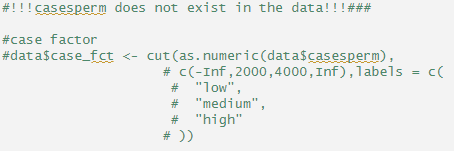
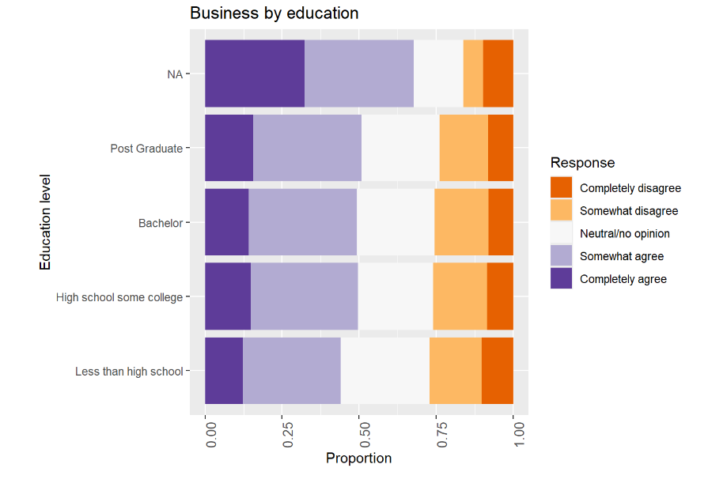
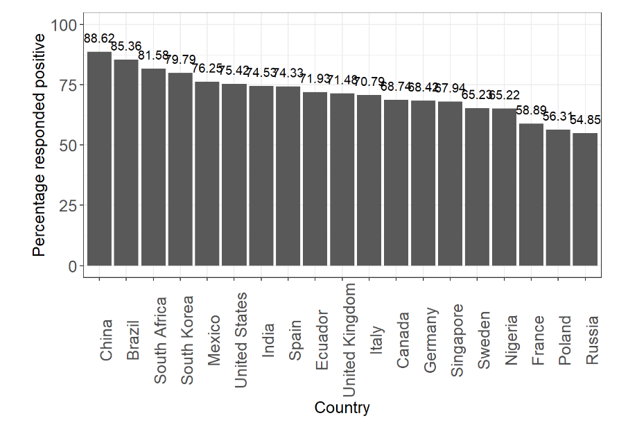

Open Peer Review
Introduction
The COVID-19 pandemic has highlighted how open science and reproducible research can speed up scientific progress. Open science makes it possible for different research facilities to share their finding with the rest of the world for others to build on. Reproducible research is an important subject within the Open Science. Not only should science publication be available to everyone (after the research has been completed) without any publisher pay wall, but it’s also important that publications are reproducible and the conclusions can be verified. In this chapter I’ll peer review an article from bioRxiv. The article chosen to review is: Exploring Metabolic Anomalies in COVID-19 and Post-COVID-19: A Machine Learning Approach with Explainable Artificial Intelligence
Criteria Sumner et al. (2020)
The open peer review will use criteria from the following publication: Reproducibility and reporting practices in COVID-19 preprint manuscripts
| Transparency Criteria | Definition | Response Type |
|---|---|---|
| Study Purpose | A concise statement in the introduction of the article, often in the last paragraph, that establishes the reason the research was conducted. Also called the study objective. | Binary |
| Data Availability Statement | A statement, in an individual section offset from the main body of text, that explains how or if one can access a study’s data. The title of the section may vary, but it must explicitly mention data; it is therefore distinct from a supplementary materials section. | Binary |
| Data Location | Where the article’s data can be accessed, either raw or processed. | Found Value |
| Study Location | Author has stated in the methods section where the study took place or the data’s country/region of origin. | Binary; Found Value |
| Author Review | The professionalism of the contact information that the author has provided in the manuscript. | Found Value |
| Ethics Statement | A statement within the manuscript indicating any ethical concerns, including the presence of sensitive data. | Binary |
| Funding Statement | A statement within the manuscript indicating whether or not the authors received funding for their research. | Binary |
| Code Availability | Authors have shared access to the most updated code that they used in their study, including code used for analysis. | Binary |
About the article
The research publication Oropeza-Valdez et al. (2024) states in its abstract to have used techniques such as machine learning (ML), explainable artificial intelligence (XAI) and SHapley Additive exPlanations (SHAP) to analyze metabolic alterations in COVID-19 and Post-COVID-19 patients. The publication aims to uncover metabolic signatures and identify potential biomarkers for these conditions. It states to have analyzed 142 COVID-19, 48 Post-COVID-19 samples and 38 CONTROL patients, with 111 identified metabolites. After which the results have been compared to traditional methods such as PCA and PLS-DA. The comparison showed that the combined techniques of ML, XAI and SHAP outperformed the traditional methods and provides different insights in the metabolic basis of the disease’s progression and its aftermath.
Open Peer Review
| Transparency Criteria | Definition | Response Type |
|---|---|---|
| Study Purpose | A concise statement in the introduction of the article, often in the last paragraph, that establishes the reason the research was conducted. Also called the study objective. | yes |
| Data Availability Statement | A statement, in an individual section offset from the main body of text, that explains how or if one can access a study’s data. The title of the section may vary, but it must explicitly mention data; it is therefore distinct from a supplementary materials section. | yes |
| Data Location | Where the article’s data can be accessed, either raw or processed. | online |
| Study Location | Author has stated in the methods section where the study took place or the data’s country/region of origin. | yes; Mendeley database |
| Author Review | The professionalism of the contact information that the author has provided in the manuscript. | Tier 3 |
| Ethics Statement | A statement within the manuscript indicating any ethical concerns, including the presence of sensitive data. | no |
| Funding Statement | A statement within the manuscript indicating whether or not the authors received funding for their research. | yes |
| Code Availability | Authors have shared access to the most updated code that they used in their study, including code used for analysis. | yes |
Conclusion
The article scores positive in almost all aspects expects except the ethics statement and Author Review. The author scored tier 3 on the Author Review which states “Author used institutional email address as primary contact”. An ORCID ID has not been found which is required for Tier 4. The first time reviewing this article on April 17th 2024 the github page did not work yet and it scored negative on code availibility. This has recently been fixed as the github link now works. Thereby the article scores rather high on the open peer review. The article only misses an ethics statement and ORCID ID. Last updated on the 26th of May 2024.
Reproducing R code Palayew (2020)
Since the article above has written its code mainly in jupyter notebook using Google Collaboration. There has been decided to search another source for the reproducing R code section. The article chosen is COVID-19 Vaccine paper from the OSFHOME database. The code is reproduced in the Appendix 1: COVID-19 Vaccine paper “Open Peer Review” section to make this chapter better readable.

While reproducing the code a few issues were found. The code in the picture above did not work. This code was part of importing the health data. It did not work, because the column “caseperm” did not exist. However caseperm has also not been used in the entire code. Since the code runs perfectly fine without this column. Therefor it has been decided to put this part of the code as comments. The second issue arised after the code was executed inside this section. The select() function in other chapters after the execution of this code started breaking. To fix this the specifying select::select seemed to fix the issue. The code was later moved to the appendix and the issue didn’t matter anymore since it was on the end of the bookdown. At last I have made minimal adjustments to the headers in order for the layout to match the rest of the chapters and made ggsave a comment (to not save to plot as png).
The paper starts off with loading the data and changing variable types to factors. The paper then asks two questions about vaccines to a group of people across different countries. The first question is as follows: “I would follow my employer’s recommendation to get a COVID-19 vaccine once the government has approved it as safe and effective”. 1179 people completely disagreed, 2299 people somewhat agreed, 3488 people were neutral or had no opinion, 4579 people somewhat agreed and 1881 people completely agreed. The data then got visualized using ggplot per category. This included gender, age, income, education and country. At last gender, age, income, education were visualized per country. See example screenshots below (or see the appendix). The country category however was the only one that had no title connected to its plot.


The second question asked the next question: “If a COVID-19 vaccine is proven safe and effective and is available to me, I will take it”. 1091 people completely disagreed, 819 people somewhat agreed, 1912 people were neutral or had no opinion, 3318 people somewhat agreed and 6286 people completely agreed. The data got visualized in the same way as the first question. The country category again had no title.
The paper then moves on to calculating regression using “Generalized Linear Models” (GLM) The GLM principle is based on the concept of linear models (calculating y with x) which can be computed using the lm() function. Lineair models however cannot handle things like binary types (example: yes/no) or counts, because they’re not continuous. GLM’s on the other hand are similar to linear models, but are able to compute other distributions then the normal distribution like poisson and binomial distributions. Furthermore they’re compatible with link functions. In this paper GLM is used because the data consists of count data and has a binomial distribution. Therefore is not compatible with a normal lineair model. Before the paper computes the GLM an if else statement is used to differentiate between positive and negative reaction to the questions. The glm() function within the paper is then used to compute the earlier explained GLM regression for a number of factors after which the coëfficients and confidence intervals per category are binded together. DataCamp (2020)
At last a table with the percentage of all categories per country is printed out in a cat table format (like what percentage of people responded positive or what percentage was between the age of 18-24 in Brazil). The percentage of people which responded positive is also visualized using ggplot in a supplemental figure. See the screenshot below (or see the apendix). Again without a title.

Conclusion on COVID-19 vaccin paper
Reproducing the code was apart of some issues fairly easy to reproduce. However the paper did not have a clear structure. For example two different headers were both called “regression”. The paper heavily lacked comments and info around the code or within the rmd, which made it more difficult to understand. Within the paper some figures lacked titles and lastly the caseperm column did not exist and was never used.